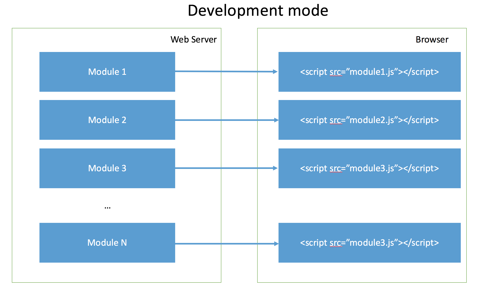
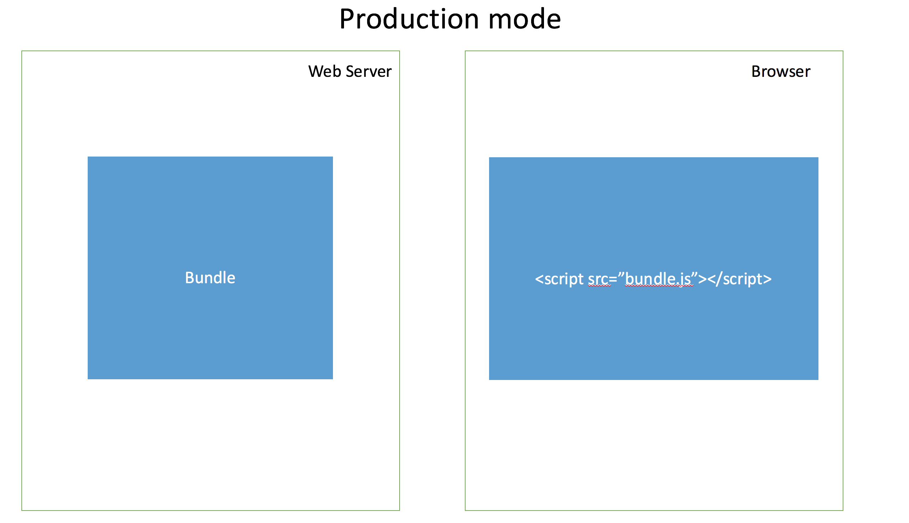

Packing Frontend Applications
Packing Frontend Applications
Modern Frontend Part 1

The problem
- Web sites are turning into Web apps
- Code complexity grows as the app gets bigger
- Assembly gets harder
- Developer wants discrete JS files/modules
- Every module might have its own CSS file
- Deployment wants optimized code in just one or a few HTTP calls
Solution
Front-end developers need a solution with:
- Some sort of #include/import/require
- Ability to load nested dependencies
- Ease of use for developer but then backed by an optimization tool that helps deployment
A long time ago in a galaxy far far away...
there were no modules
Script tag modules
Cons:
- Conflicts in the global object.
- Order of loading is important.
- Developers have to resolve dependencies of modules/libraries.
- In big projects the list can get really long and difficult to manage.
CommonJS
Pros:
- Fits to the asynchronous request style in networks.
- Parallel loading of multiple modules.
Cons:
- Coding overhead. More difficult to read and write.
- Seems to be some kind of workaround.
AMD – Asynchronous Module Definition
UMD – Universal Module Definition
ECMAScript 2015 modules
Pros:
- Static analysis is easy
- Future-proof as ES standard
Cons:
- Native browser support will take time
- Very few modules in this style
Difference between dev and production

Difference between dev and production

What about assets?
- Images
- CSS
- Fonts
- JSON
- HTML Templates
Nothing 😢
Preprocessing
- ES6 → Javascript
- TypeScript → Javascript
- LESS stylesheets → CSS stylesheets
- JADE templates → javascript which generates html
- i18n files → something
- ...
Webpack

What is Webpack
Webpack is a module bundler.
Webpack takes modules with dependencies and generates static assets representing those modules.
Goals
- Split the dependency tree into chunks loaded on demand
- Keep initial loading time low
- Every static asset should be able to be a module
- Ability to integrate 3rd-party libraries as modules
- Ability to customize nearly every part of the module bundler
- Suited for big projects
Features
Code Splitting
webpack has two types of dependencies in its dependency tree: sync and async. Async dependencies act as split points and form a new chunk. After the chunk tree is optimized, a file is emitted for each chunk
Loaders
webpack can only process JavaScript natively, but loaders are used to transform other resources into JavaScript. By doing so, every resource forms a module.
Features
Clever parsing
webpack has a clever parser that can process nearly every 3rd party library. It even allows expressions in dependencies like so require("./templates/" + name + ".jade"). It handles the most common module styles: CommonJs and AMD
Plugin system
webpack features a rich plugin system. Most internal features are based on this plugin system. This allows you to customize webpack for your needs and distribute common plugins as open source.
Webpack development server
- Automatic refresh
- Hot module replacement
Webpack vs Dojo Build
|
Webpack |
Dojo |
| AMD Modules |
✔︎ |
✔︎ |
| Common.JS |
✔︎ |
✔︎ |
| UMD modules |
✔︎ |
✘ |
| HTML templates |
✔︎ |
✔︎ |
| Images |
✔︎ |
✘ |
| CSS |
✔︎ |
✔︎ |
| ES6/TypeScript/CoffeeScript |
✔︎ |
✘ |
| Development server |
✔︎ |
✘ |
| Hot reloading |
✔︎ |
✘ |
| Making coffee |
✔︎ |
✘ |